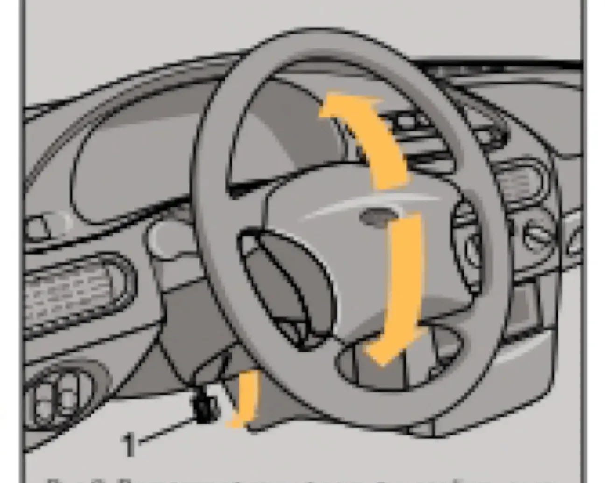

ОПИСАНИЕ АВТОМОБИЛЯ — I. Кузов и салон
Регулировка положения рулевого колеса
рульрулевая колонканаклонблокирующая рукоятка
На автомобиле устанавливается регулируемая по углу наклона рулевая колонка. Для выбора оптимального положения рулевого колеса опустите блокирующую рукоятку вниз и, после установки рулевого колеса в желаемое положение, зафиксируйте рулевую колонку перемещением рукоятки в крайнее верхнее положение.

Предупреждение / внимание:
Регулировку положения рулевой колонки проводите только на неподвижном автомобиле.
Регулировку положения рулевой колонки проводите только на неподвижном автомобиле.